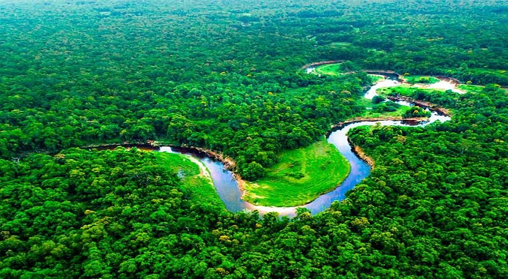

La Selva Peruana
La selva peruana es uno de los destinos más fascinantes del país y del mundo. Ocupa más del 60 % del territorio nacional y forma parte de la majestuosa cuenca amazónica. Esta región, dividida en Selva Alta y Selva Baja, ofrece una experiencia única para los viajeros que buscan aventura, biodiversidad y conexión con culturas ancestrales. Desde ciudades vibrantes como Iquitos y Tarapoto hasta reservas naturales como Pacaya Samiria y Tambopata, el turismo en la selva peruana permite navegar por ríos caudalosos, avistar delfines rosados, explorar bosques tropicales y convivir con comunidades indígenas que conservan tradiciones milenarias. Además de su exuberante flora y fauna, la selva ofrece actividades como caminatas ecológicas, paseos en bote, pesca artesanal, observación de aves y turismo vivencial. Es una oportunidad para descubrir la riqueza natural y cultural del Perú profundo.
Geografía y Clima
La selva peruana, que forma parte de la cuenca amazónica, abarca más del 60 % del territorio nacional y se divide en dos zonas principales: la Selva Alta y la Selva Baja. La primera se ubica en las laderas orientales de los Andes y se caracteriza por un terreno montañoso cubierto de vegetación espesa. La segunda, más extensa y de relieve plano, está recorrida por numerosos ríos, siendo el Amazonas el más importante. En cuanto al clima, la región presenta condiciones tropicales, con temperaturas elevadas y alta humedad durante todo el año. La Selva Alta es más fresca y húmeda debido a su altitud, mientras que la Selva Baja experimenta calor constante y lluvias abundantes. Estas características geográficas y climáticas sustentan una de las mayores biodiversidades del planeta, y hacen de la selva peruana un ecosistema vital y único en el mundo.
Selva Peruana
Especies Emblemáticas

MONO ARAÑA es un primate ágil y sociable que habita en las copas de los árboles de la selva amazónica peruana. Se caracteriza por sus extremidades largas, su cola prensil que usa como una quinta mano y la ausencia de pulgares.
Leer más...TARICAYA es una tortuga de agua dulce que habita en los ríos y lagos de la Amazonía peruana. Es fácilmente reconocible por su caparazón ovalado de color marrón oscuro y las manchas amarillas en su cabeza. Puede vivir hasta 100 años.
Leer más...
OSO HORMIGUERO GIGANTE es uno de los mamíferos más emblemáticos de la selva peruana. Habita principalmente en los bosques tropicales húmedos y sabanas del oriente del país, donde encuentra su alimento favorito: hormigas y termitas.
Leer más...
DELFÍN ROSADO también conocido como bufeo o boto, es uno de los animales más emblemáticos y misteriosos de la selva peruana. Habita en los ríos, lagos y bosques inundables de la Amazonía, especialmente en zonas como Iquitos.
Leer más...Reservas Naturales

RESERVA NACIONAL DE TAMBOPATA es uno de los tesoros naturales más impresionantes del Perú. Ubicada en el departamento de Madre de Dios, esta área protegida abarca más de 270,000 hectáreas de selva amazónica y fue creada en el año 2000 con el objetivo de conservar su extraordinaria biodiversidad.
Leer más...
RESERVA COMUNAL AMARAKAERI es un área natural protegida ubicada en el departamento de Madre de Dios, en plena Amazonía peruana. Fue establecida el 9 de mayo de 2002 y abarca más de 402,000 hectáreas de bosques tropicales, ríos y montañas.Esta reserva es única porque fue creada a iniciativa de los pueblos indígenas.
Leer más...
RESERVA NACIONAL DE PACAYA SAMIRIA es una de las áreas naturales protegidas más extensas y biodiversas del Perú. Ubicada en el departamento de Loreto, en plena Amazonía peruana, esta reserva abarca más de 2 millones de hectáreas de bosques inundables, ríos y cochas. Su belleza natural la convierten en un tesoro invaluable.
Leer más...